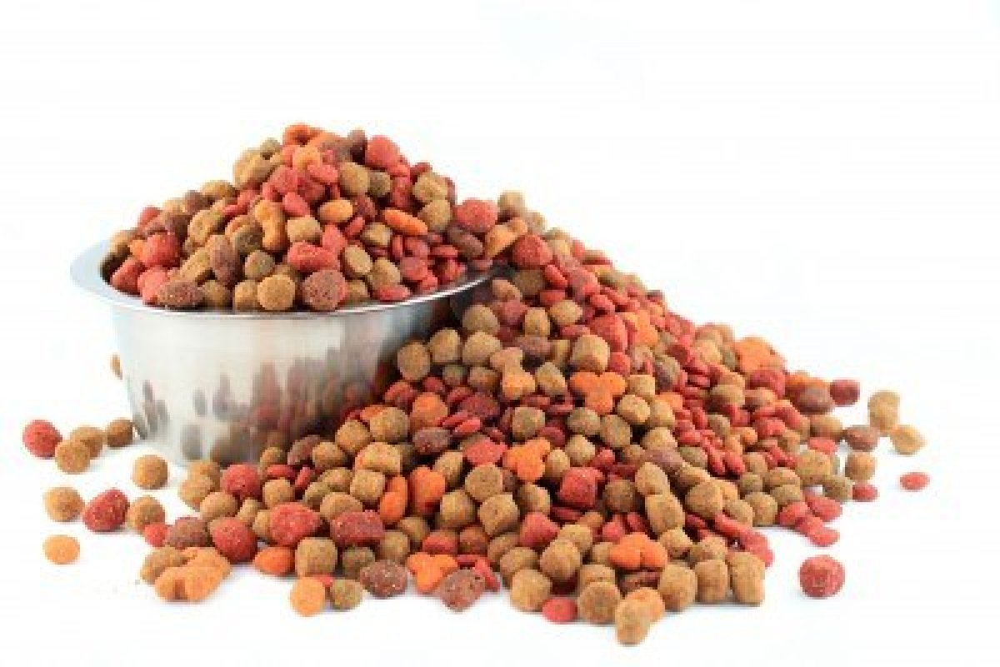

Here at Smithard's Dog Co, we focus on the customer - your dog. Because we are a small company, we are able to make our products with the utmost care and presicion; after all, you want what's best for your furry friend! Our products are all natural and we never use pesticides in our crops or hormones for our animals. In the following pages, you can see all our products, inspiring stories, and nutrition, as well as look at Smithard's Farm and read About Us. We hope you and your dogs enjoy your experience with Smithard's Dog Co and continue that experience with us!